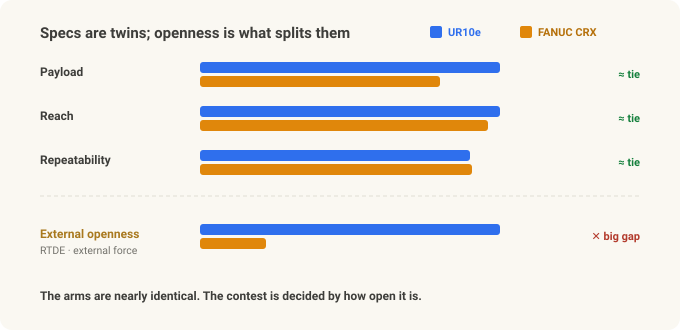
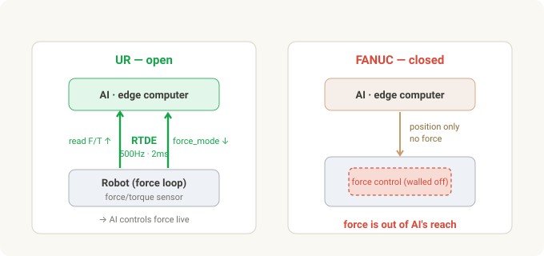
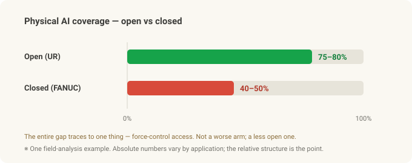

UR vs FANUC — For Physical AI, What Decides Isn't Specs, It's Openness¶
Cobot series · Part 2 of 3. Part 1 was what a cobot is and why it's different. Now we put the two flagships head to head — Universal Robots (UR) and FANUC — before Part 3 connects it to investing (UR = Teradyne · FANUC · NVIDIA).
Set two 10 kg-class cobots side by side: UR's UR10e and FANUC's CRX-10iA/L. Payload, reach, repeatability… on the spec sheet they're near twins. The prices are close too. So — same thing, right?
Then you put Physical AI in front of them — the flow from the Robot Vision series, where AI becomes the robot's eyes and hands — and the two arms become completely different machines. One lets the AI reach far into it; the other hits a wall. And the difference isn't the arm's performance. It's how open the robot is.
This is the story of why that openness is decisive.
In 30 seconds¶
- The specs are basically a tie. UR10e (12.5 kg / 1300 mm) and FANUC CRX-10iA/L (10 kg / 1249 mm) overlap on repeatability (±0.05 mm class), safety (ISO/TS 15066), and hand guiding.
- The decider is external-control openness. UR opens RTDE — 500Hz bidirectional data — so you can read wrist force/torque externally and command force from outside via
force_mode(), open and free out of the box. FANUC's force control is strong too, but it runs inside the robot only — there's no open channel to reach into the force loop from outside in real time. - Why 500Hz matters: for contact tasks (insertion, touch-off), an AI closing a force loop needs millisecond command intervals. UR gives you 2 ms (500Hz) natively. FANUC has a paid high-rate streaming option too, but it's position-only, and the free path runs at tens of Hz — too slow to react to force.
- The ecosystem splits too. UR: URScript,
ur_rtde(Python), an official ROS 2 driver, MoveIt 2, Isaac ROS, free simulators. FANUC centers on proprietary Karel/TP and ROBOGUIDE — though in late 2025 it partnered with NVIDIA and shipped official ROS 2 + Isaac Sim to start opening up (more below). - So how much the AI can touch diverges. In one field analysis it worked out to roughly 75–80% (open) vs 40–50% (closed) Physical AI coverage — and the entire gap was force-control access.
- FANUC, in return, is strong on scale, high-volume precision, CNC integration, and fitting into existing plants. "Physical AI first" → UR; "traditional automation's stability and scale" → FANUC. Different jobs.
The specs are basically a tie¶
Clear up the misconception first: this comparison isn't "which arm is better." In the 10 kg class they're strikingly similar.
| Spec | FANUC CRX-10iA/L | UR10e |
|---|---|---|
| Payload | 10 kg | 12.5 kg |
| Reach | 1,249 mm | 1,300 mm |
| Repeatability | ±0.04 mm | ±0.05 mm |
| DoF | 6 | 6 |
| Weight | 45 kg | 33.5 kg |
| IP rating | IP54 | IP54 |
| Collaborative safety | ISO/TS 15066 | ISO/TS 15066 |
| Hand guiding | built-in | built-in |
| Approx. price | ~$45–55k | ~$35–45k |
(Figures are approximate and vary by datasheet and date.)
Payload, reach, precision — all comparable, with UR a bit lighter and cheaper. On the arm alone, you can't really separate them. The contest is decided where the spec sheet doesn't look.

Ease and precision — the two camps started from opposite ends¶
The two companies' DNA is opposite.
- UR started from ease. A Danish startup created the category with the first commercial cobot in 2008, selling "a robot anyone can hand-guide." The trade-off was a reputation for weaker speed, rigidity, and absolute accuracy than caged industrial arms.
- FANUC is the heavyweight of precision and scale — the world's largest industrial-robot maker and the dominant supplier of machine-tool CNC. Caged high-speed, high-precision mass production is home turf. It answered the cobot category with the CRX series, leading on tablet drag-and-drop programming aimed straight at UR's ease-of-use.
The interesting part is that the two camps are converging on each other's weaknesses. FANUC chases "ease" with CRX, and UR's newest arms (UR20/UR30) pushed up payload (20–30 kg), reach, speed, rigidity, and sealing (IP65) — moving into territory that used to force you into a caged industrial robot.
One thing to state precisely, though. People say "UR is easy but less precise," but that's not about repeatability (returning to the same taught point) — there UR sat at ±0.03–0.05 mm on the e-Series, within about one class of industrial arms. In fact the big new UR20/UR30 are ±0.1 mm — slightly looser than the e-Series (the normal trade-off for a bigger, faster, heavier arm). UR's real historical weakness was speed, rigidity, and absolute accuracy (hitting a commanded pose it was never taught — from CAD or a vision offset), which it addresses with per-arm kinematic calibration. And the software was re-architected from PolyScope 5.x to PolyScope X — but that's a UX/extensibility story, not a more precise arm (and it didn't ship in lockstep with UR20/UR30). In short, what UR narrowed was payload, reach, and rigidity — the things that used to force a caged robot — not the repeatability number itself. Either way, on paper the two are now close. But the real fork isn't here.
The real fork — how open is it?¶
The heart of Physical AI is a tight perception → action loop. The AI sees with a camera, moves the robot, feels force, corrects instantly — and how tightly you can close that loop is everything. For that, the AI has to read the robot's internal data and issue commands from outside. This is exactly where the two diverge.

- UR — open. The RTDE (Real-Time Data Exchange) protocol opens 500Hz bidirectional communication. You read joint positions and wrist force/torque externally in real time, and command force, speed, and impedance from outside (e.g. from an edge computer) with calls like
force_mode()andspeedl(). An AI policy can drive the robot's force behavior live. - FANUC — more closed. The free standard path is EtherNet/IP + Karel registers, plus a recent official ROS 2 driver — updating at tens of Hz. For faster external streaming you buy a paid option like Stream Motion (~125–250Hz), and even that is position-only. Wrist force/torque can be polled slowly over registers, but that's not a real-time force channel, and there's no open path to command force from outside in real time. FANUC's force control is capable — but it runs inside the robot only.
Why 500Hz matters¶
The numbers make it obvious: UR is 500Hz — 2 ms between commands. FANUC's free path (tens of Hz) sits in the tens-to-100 ms range, and even the paid high-rate option updates position at 4–8 ms. On a contact task — seating a connector, a light touch-off — an AI that needs to feel resistance and modulate force can't work at 100 ms; it's already shoved past. 2 ms can react like a fingertip. But more decisive than the rate: UR carries force over that fast channel, while FANUC's channel carries only position. That's the threshold for reactive force control.
The software ecosystem — Python, or a vendor?¶
Openness doesn't stop at one interface; it spreads across the whole ecosystem.
| Software | FANUC CRX | UR |
|---|---|---|
| Native language | Karel / TP (proprietary) | URScript (open, Python-like) |
| Python SDK | none | ur_rtde (open source) |
| ROS 2 driver | official (new 2025) · tens of Hz | official · 500Hz |
| MoveIt 2 | limited | full |
| Isaac ROS | partial | full |
| Simulator | ROBOGUIDE + Isaac Sim (NVIDIA partnership) | URSim (free), Gazebo, Isaac Sim |
| Open documentation | limited | comprehensive |
| External-vendor dependency | usually required | not required |
On the UR side, the entire control stack runs as Python on the edge computer. You write, debug, and iterate the control code yourself — so you don't have to call an external FANUC programming vendor every time you add a task. That slashes reprogramming cost and lead time.
FANUC's closedness isn't automatically bad, of course. Proven stability, accountable vendor support, and seamless integration with existing FANUC lines — on a traditional automation floor, those are strengths. It's just a different direction.
Force control — it all comes down to whether the AI can touch it¶
Both robots do force control internally. UR has a wrist force/torque sensor built into the e-Series; FANUC does it with a separate F/T sensor + Force Control package (a paid option) — force following, force-threshold touch-off, pressing to a set force. Both get a checkmark on the spec sheet; "FANUC has no force control" is a myth.
The decisive difference: UR opens that force to the outside; FANUC doesn't.
- UR: force/torque data streams to the edge computer at 500Hz, and the edge's AI policy commands force back via
force_mode()→ the AI controls force in real time. - FANUC: force control is locked inside the robot, and the AI policy can't intervene in its behavior.
On contact-critical work — insertion, assembly, fine touch — this difference is exactly "solvable with AI" vs "frozen in a script." Same for the demonstration data used in imitation learning. When you hand-guide to teach, UR records position and force, while FANUC captures position only. The more a task depends on force, the more the very quality of your dataset diverges.
So the Physical AI coverage diverges¶
To sum up: the perception layer (finding the target with a camera and getting 3D coordinates) is the same on both — the edge computer and camera handle it anyway. What diverges is the manipulation layer, especially force-bearing tasks.
- Open (UR): the AI controls force too, so contact tasks like insertion, touch-off, and compliant assembly are solvable with an AI policy.
- Closed (FANUC): perception works, but with the force-control layer walled off, contact tasks stay frozen in scripts.
In one field analysis, that difference came out as roughly 75–80% (open) vs 40–50% (closed) Physical AI coverage. The number itself is an illustrative estimate that varies by application — but the point is that the entire gap traces to one thing: force-control access. Not a worse arm — a less open one.

That doesn't mean FANUC loses — different jobs¶
Keep the balance here. The argument above rests on the premise "if Physical AI is the top priority." Drop that premise and the picture changes.
Where FANUC wins: - Scale and reliability — the world's largest robot maker, a million-plus units shipped. Proven durability and a support network. - High-precision, high-volume — home turf for caged industrial arms; lines where cycle time and throughput are everything. - CNC / factory-automation integration — in a plant already running on FANUC robots and CNC, bolting on the same ecosystem is natural and stable. - Closed = stable — a validated, vendor-backed stack. For fixed processes that rarely change, that's a plus, not a minus.
Where UR wins: - Open · Physical AI · research — contact tasks where the AI must touch force, fast iteration, a Python/ROS 2/Isaac stack. - Vendor independence · fast high-mix deployment — reprogram a new task in-house, immediately.
So: "stability and scale for a fixed high-speed line" → FANUC; "a flexible cell the AI keeps touching and evolving" → UR. Not replacement — different uses.
And FANUC isn't standing still. In late 2025 it announced an official Physical AI partnership with NVIDIA — putting NVIDIA Jetson (on-robot edge AI) and Isaac Sim / Omniverse (digital-twin simulation) onto its robots, and lowering the Python barrier with official ROS 2 support. The direction is clearly toward more open. But what's public so far is mostly simulation, edge compute, and programming access — not yet the thing this piece hinges on: opening the real-time force loop to the outside. Whether that gap closes ties directly into Part 3's investment story, so we'll pick it up there.
Summary¶
| Dimension | FANUC CRX | UR |
|---|---|---|
| Arm spec (10 kg class) | comparable (±0.04 mm) | comparable, a bit lighter/cheaper |
| External control | free tens of Hz / paid 125–250Hz · position-only, no real-time force | RTDE 500Hz · read + command force |
| Software | Karel/TP · ROBOGUIDE — opening up via ROS 2 · NVIDIA | URScript · Python · official ROS 2 · Isaac |
| AI force control | no (locked inside) | yes (live external control) |
| Demo data | position only | position + force |
| Physical AI coverage | low (perception only) | high (through force control) |
| Wins instead on | scale · high-volume precision · CNC · stability | openness · flexibility · fast iteration |
The one thing to remember: the two arms are nearly the same. What decides Physical AI is whether the AI can reach into the robot's force loop — i.e. openness. And being open ultimately means you can fuse AI with the robot — a "fusion" that comes back as the key thread of Part 3. Which leads straight to the third question: so if you were investing in this, in whom? Part 3 breaks down UR (parent Teradyne) · FANUC (Tokyo 6954 / ADR FANUY) · NVIDIA through a Physical AI investing lens.
Related: Part 1 — What Is a Collaborative Robot (Cobot)? · Part 3 — Physical AI investing · From Stereo to Grasp
Sources & trademarks¶
Specs and interfaces follow the manufacturers' (Universal Robots, FANUC) public documentation and open-source tools (ur_rtde, ROS 2 drivers); figures and prices are approximations that vary by model and date. The platform-openness comparison and "Physical AI coverage" estimates are illustrative, based on general technical characteristics, not any specific customer or application. RTDE, URScript, and PolyScope are trademarks of Universal Robots (Teradyne); FANUC, CRX, Karel, and ROBOGUIDE are trademarks of FANUC Corporation, used here for identification only. This article is not advice to buy any product or make any investment.
Glossary¶
- RTDE (Real-Time Data Exchange) — UR's real-time bidirectional data interface (up to 500Hz); the channel for reading robot state and issuing commands from outside.
- force_mode() — the UR call that lets an external program directly control the robot's force behavior.
- Karel / TP — FANUC's proprietary robot programming language and teach-pendant program.
- EtherNet/IP — a standard industrial communication protocol; FANUC's main external interface.
- Stream Motion — FANUC's paid external motion-streaming option; an outside PC can send position commands, but not force/torque.
- Force/torque (F/T) control — the robot's ability to sense and modulate contact force; core to insertion, touch-off, and other contact tasks.
- Imitation learning — training an AI policy from human demonstration data.
- ROS 2 · MoveIt 2 · Isaac ROS — the common robotics middleware, motion planning, and NVIDIA GPU-accelerated robot packages.
- TCO (total cost of ownership) — the real cost including not just hardware but programming, integration, and maintenance.